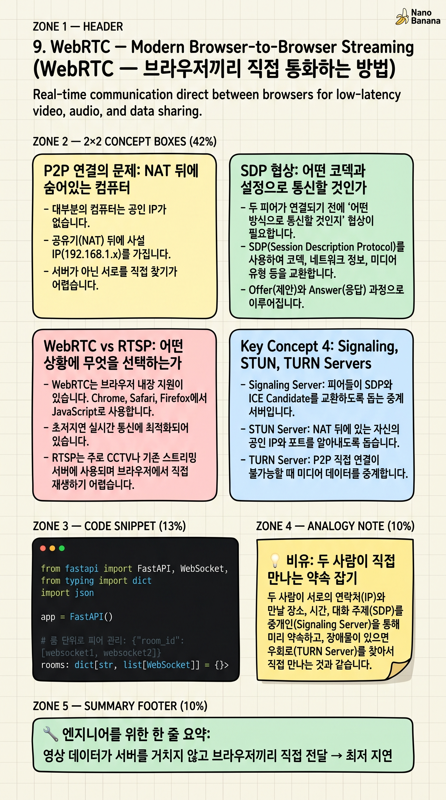

WebRTC – Modern Browser-to-Browser Streaming

🎯 학습 목표
- WebRTC가 RTSP와 다른 점 — P2P vs 서버 스트리밍 차이를 설명할 수 있다
- ICE, STUN, TURN이 각각 무슨 역할인지 설명할 수 있다
- Offer/Answer SDP 협상 과정을 이해한다
- WebRTC가 Zoom·Google Meet 같은 화상회의에 쓰이는 이유를 알 수 있다
RTSP는 서버가 영상을 클라이언트에게 스트리밍합니다(서버→클라이언트). WebRTC는 클라이언트끼리 직접 연결됩니다(P2P: Peer-to-Peer). Zoom에서 화상통화를 할 때 여러분의 영상이 Zoom 서버를 거쳐 상대방에게 가는 게 아닙니다. 대부분의 경우 여러분 컴퓨터에서 상대 컴퓨터로 직접 전달됩니다.
이 P2P 방식이 가능한 이유는 WebRTC가 해결하는 핵심 문제 때문입니다. 인터넷에 직접 연결된 공인 IP 없이 NAT(공유기) 뒤에 있는 두 컴퓨터가 어떻게 서로 직접 연결될 수 있을까요? ICE, STUN, TURN이 이 문제를 해결합니다.
WebRTC는 UDP 기반으로 지연 시간이 100ms 미만입니다. 화상회의의 자연스러운 대화를 위한 최소 요건입니다. RTSP보다 훨씬 낮은 지연 시간을 자랑합니다.
핵심 내용
P2P 연결의 문제: NAT 뒤에 숨어있는 컴퓨터
대부분의 컴퓨터는 공인 IP가 없습니다. 공유기(NAT) 뒤에 사설 IP(192.168.1.x)를 가집니다. 외부에서 이 컴퓨터에 직접 연결하려면 공유기가 어떤 내부 기기로 연결을 전달해야 할지 모릅니다.
STUN(Session Traversal Utilities for NAT) 서버가 이 문제를 해결합니다. 외부 STUN 서버에 접속하면 서버가 '당신의 공인 IP는 X.X.X.X이고, 포트는 YYYY입니다'라고 알려줍니다. 이 정보를 상대방과 교환하면 직접 연결이 가능해집니다.
방화벽이 엄격해 STUN으로도 P2P가 불가능한 경우, TURN(Traversal Using Relays around NAT) 서버가 중계합니다. 이 경우 P2P가 아닌 서버 중계이므로 지연이 증가하고 서버 비용이 발생합니다. WebRTC는 P2P를 먼저 시도하고 실패하면 TURN으로 폴백합니다.
SDP 협상: 어떤 코덱과 설정으로 통신할 것인가
두 피어가 연결되기 전에 '어떤 방식으로 통신할 것인지' 협상이 필요합니다. SDP(Session Description Protocol)는 이 협상에 쓰이는 데이터 형식입니다. 지원 코덱, 해상도, 비트레이트, 네트워크 주소 등이 포함됩니다.
Offer/Answer 패턴으로 협상합니다. A가 'H.264, VP8을 지원하고 최대 720p까지 가능해. 내 주소는 이거야' (Offer SDP 생성). B가 'H.264로 하자, 나도 720p 가능해. 내 주소는 이거야' (Answer SDP 생성). 이 SDP 교환은 시그널링 서버(WebSocket 등)를 통해 이루어집니다.
ICE Candidate 교환도 이 과정에서 함께 일어납니다. 각 피어가 가능한 연결 경로(로컬 IP, 공인 IP, TURN 서버 주소)를 여러 개 제시하고, 가장 좋은 경로를 선택합니다. 이 과정이 완료되면 직접 UDP 스트림이 시작됩니다.
WebRTC vs RTSP: 어떤 상황에 무엇을 선택하는가
WebRTC는 브라우저 내장 지원이 있습니다. Chrome, Safari, Firefox에서 JavaScript만으로 화상통화를 구현할 수 있습니다. 플러그인이나 별도 앱 설치가 불필요합니다.
RTSP는 IP 카메라·CCTV 표준입니다. 서버에서 여러 클라이언트에게 동시 스트리밍에 유리합니다(1:다 방송). RTSP를 브라우저에서 직접 재생하려면 변환(HLS/DASH로 트랜스코딩)이 필요합니다.
실제 시스템에서의 조합: CCTV(RTSP) → 분석 서버(FFmpeg+FastAPI) → 브라우저(WebSocket으로 결과 전달). 또는 모바일 카메라(WebRTC) → WebRTC 서버(SFU) → AI 분석 서버. 각 프로토콜이 자신에게 최적화된 구간을 맡습니다.
💡 비유로 이해하기
WebRTC 연결 수립은 두 사람이 낯선 도시에서 처음 만나는 약속과 비슷합니다. 각자 '나는 강남역 2번 출구 앞에 있어'(공인 IP+포트)라는 정보를 카카오톡(시그널링 서버/WebSocket)으로 교환합니다. 그 후 직접 만납니다(P2P 연결).
STUN은 내 위치를 외부에서 확인해주는 친구입니다. '내가 보기에 너는 강남역 2번 출구 앞에 있어 보여'라고 알려줍니다(공인 IP 확인). TURN은 두 사람이 어떻게 해도 직접 만날 수 없을 때 중간에서 소포를 대신 전달해주는 택배 회사입니다.
SDP 협상은 만나기 전 '어떤 언어로 대화할까? 한국어로 하자(코덱 협상)' '얼마나 크게 말해야 할까?(비트레이트)'를 미리 약속하는 과정입니다. 직접 만났을 때 바로 대화할 수 있도록 준비합니다.
💻 코드 예시
WebRTC 시그널링 서버를 FastAPI WebSocket으로 구현합니다. 실제 P2P 연결(aiortc)은 복잡하므로, 여기서는 두 클라이언트가 SDP Offer/Answer를 교환하는 시그널링 서버 핵심 로직에 집중합니다.
from fastapi import FastAPI, WebSocket, WebSocketDisconnect
from typing import dict
import json
app = FastAPI()
# 룸 단위로 피어 관리: {"room_id": [websocket1, websocket2]}
rooms: dict[str, list[WebSocket]] = {}
@app.websocket("/signal/{room_id}")
async def signaling(websocket: WebSocket, room_id: str):
"""WebRTC 시그널링 서버 — SDP와 ICE 후보를 피어 간 중계합니다."""
await websocket.accept()
# 룸에 참여
if room_id not in rooms:
rooms[room_id] = []
rooms[room_id].append(websocket)
peers = rooms[room_id]
print(f"[{room_id}] 새 피어 참여. 현재 {len(peers)}명")
try:
async for raw in websocket.iter_text():
msg = json.loads(raw)
msg_type = msg.get("type")
# SDP Offer/Answer, ICE Candidate를 같은 룸의 다른 피어에게 중계
if msg_type in ("offer", "answer", "ice-candidate"):
for peer in peers:
if peer != websocket: # 자신 제외
await peer.send_text(raw)
print(f"[{room_id}] {msg_type} 중계 완료")
except WebSocketDisconnect:
peers.remove(websocket)
print(f"[{room_id}] 피어 퇴장. 남은 인원: {len(peers)}")
# 상대방에게 연결 종료 알림
for peer in peers:
await peer.send_json({"type": "peer-left"})
# 클라이언트 측 JavaScript (참고):
# const pc = new RTCPeerConnection({iceServers: [{urls: 'stun:stun.l.google.com:19302'}]});
# const ws = new WebSocket('ws://localhost:8000/signal/room1');
# // Offer 생성 후 시그널링 서버로 전송
# const offer = await pc.createOffer();
# await pc.setLocalDescription(offer);
# ws.send(JSON.stringify({type: 'offer', sdp: offer.sdp}));시그널링 서버의 역할은 SDP Offer/Answer와 ICE Candidate를 두 피어 사이에서 중계하는 것뿐입니다. 실제 영상 데이터는 시그널링 서버를 거치지 않고 피어 간 직접(P2P) 전송됩니다. rooms 딕셔너리로 같은 룸의 피어들을 묶어 관리합니다. 메시지 타입이 offer/answer/ice-candidate일 때 상대 피어에게 그대로 전달합니다.
🏭 현업에서의 평가
✅ 시니어가 보는 것
- P2P, SFU(Selective Forwarding Unit), MCU(Multipoint Control Unit) 아키텍처 차이
- STUN vs TURN의 역할과 TURN이 필요한 상황
- SDP Offer/Answer 시그널링 플로우 설명
⚠️ 레드 플래그
- WebRTC 영상이 항상 서버를 거친다고 생각 (P2P 개념 부재)
- STUN과 TURN을 같은 것으로 혼동
🎤 예상 인터뷰 질문
- WebRTC P2P 연결 수립 과정을 STUN/TURN/ICE/SDP 키워드를 사용해 설명해보세요.
- 10명이 참여하는 그룹 화상회의를 WebRTC로 구현할 때 P2P Mesh vs SFU 중 어느 것을 선택하겠습니까?
✨ 핵심 요약
P2P = 직접 연결
영상 데이터가 서버를 거치지 않고 브라우저끼리 직접 전달 → 최저 지연
STUN = 위치 확인
내 공인 IP:포트를 외부 서버에서 확인. NAT 통과의 첫 번째 시도
TURN = 중계 서버
P2P가 불가능할 때 서버가 영상을 중계. 지연 증가, 비용 발생
SDP = 통신 협상서
코덱, 해상도, 비트레이트, 네트워크 주소를 담은 협상 문서
시그널링 서버
SDP와 ICE Candidate 교환을 중계하는 서버(WebSocket). 영상 데이터는 통과 안 함
ICE = 최적 경로 탐색
로컬 IP, STUN으로 얻은 공인 IP, TURN 주소 중 가장 빠른 경로 선택
100ms 미만 지연
UDP 기반 WebRTC의 지연 → 자연스러운 대화가 가능한 이유